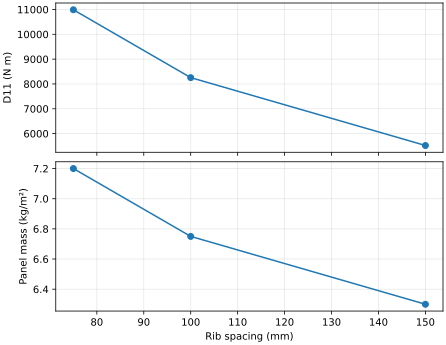

External Workflows
Use sweeps to compare panel designs, then save the selected inputs and results for another analysis step. The examples continue with the aluminum skin and blade from rib patterns.
Parameter Sweeps
Vary rib spacing while keeping the skin and rib section fixed:
from tensyl import sweep, unidirectional_cell
def build_panel(spacing):
return unidirectional_cell(
skin=skin,
member_section=rib.section,
spacing=spacing,
axial_eccentricity=offset,
)
rows = sweep(build_panel, {"spacing": [0.075, 0.10, 0.15]})
| Rib spacing (mm) | A11 (MN/m) | D11 (N m) | Mass (kg/m²) |
|---|---|---|---|
| 75 | 203.776 | 10987.93 | 7.20 |
| 100 | 192.109 | 8254.04 | 6.75 |
| 150 | 180.443 | 5520.15 | 6.30 |
Closer ribs increase both bending stiffness and mass per area. The rib bending
increment and mass increment each scale with 1/spacing in this model.

Each returned dictionary contains the input parameters, 21 named stiffness
coefficients, areal_mass, and warning_codes. A Cartesian grid visits values
in input order, with the last parameter changing fastest. Feed these rows to
csv.DictWriter or a dataframe for further comparisons.
The helper materializes the finite grid and its results. A failed design stops the sweep with its parameter values attached to the exception. Result-column names are reserved. An empty grid mapping evaluates the builder once; an empty parameter axis produces no rows.
YAML and JSON
Save the computed result and the canonical cell used to reproduce it:
from tensyl.io import from_json, from_yaml, to_json, to_yaml
units = {"length": "m", "force": "N", "mass": "kg"}
restored_result = from_json(to_json(result, units=units))
restored_cell = from_yaml(to_yaml(custom_cell, units=units))
write_json/read_json and write_yaml/read_yaml provide the corresponding
file operations. Units describe the numerical values; see
unit consistency.
Traceability
Keep the HomogenizationResult to retain stiffness, mass, frame, convention,
validity report, assumptions, and diagnostics. Save the CanonicalUnitCell
alongside it when the next workflow needs to repeat homogenization.
Cell Inputs and Sampled Atlases
A cell artifact stores the resolved skin and member stiffnesses, offsets, multiplicity, drawing, and metadata. Keep original material and design inputs in the project model when you also need to regenerate the sections themselves.
An ABDAtlas stores a built-in surface, coordinate grids, and sampled local
stiffnesses. Its restored values can be queried independently of the Python
field factory. See the worked atlas.
Thermal resultants have a separate artifact type and accompany the mechanical
stiffness when the handoff includes temperature loads.
Schema version 3 covers stiffnesses, homogenization results, cells, atlases, and thermal resultants. Readers also accept version 2 stiffness/result files. The file-format reference defines the payload and validation.
Matrices Copied from Papers
For rounded published tables, use ABDStiffness.from_published_blocks with an
explicit relative symmetry tolerance. It averages qualifying off-diagonal
pairs and records the correction per block. The
API reference gives the constructor contract. Establish the
source's units, axes, shear convention, and reference surface before importing.
Next: Solver handoff.